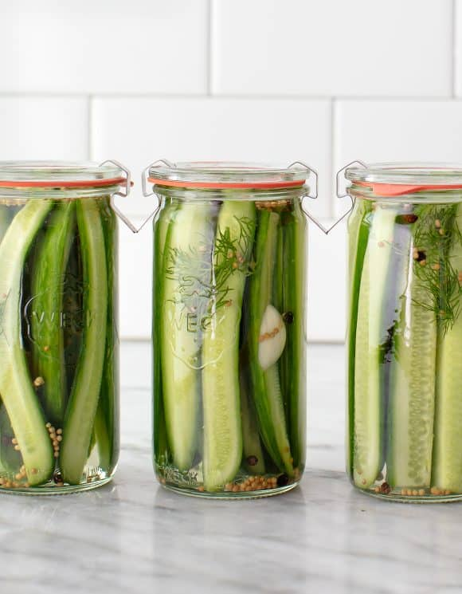

Homemade Dill Pickles

Description
The first time I tried this dill pickle recipe, I wondered why on earth
I’d spent so many years buying pickles at the grocery store. Sure, store
bought pickles can be tasty, but these little guys take dill pickles to a
whole new level. They’re super easy to make (the refrigerator does most of
the work for you!), and they taste awesome. They’re crisp, tangy, and
refreshing, with an addictive garlic-dill flavor. Most often, I eat them
as a snack right out of the fridge, but they’re delicious on sandwiches
and veggie burgers too. If you like dill pickles, you’re going to love
this recipe.
Ingredients
- 12 to 14 Persion cucumbers or 8 to 10 pickling cucumbers
- 4 garlic cloves, halved
- 2 teaspoons mustard seeds
- 2 teaspoons peppercorns
- Fresh dill sprigs, a few per jar
- 2 cups water
- 2 cups distilled white vinegar
- 1/4 cup cane sugar
- 2 tablespoons sea salt
Steps
-
To make dill pickle spears, slice the cucumbers lengthwise into
quarters. To make dill pickle chips, thinly slice them horizontally.
-
Divide the cucumbers among 4 (8-ounce) or 2 (16-ounce) jars. Divide the
garlic, mustard seeds, peppercorns, and dill sprigs among each jar.
-
Heat the water, vinegar, sugar, and salt in a medium saucepan over
medium heat. Stir until the sugar and salt dissolve, about 1 minute. Let
cool slightly and pour over the cucumbers. Set aside to cool to room
temperature, then store the pickles in the fridge.
-
Pickle spears will be lightly pickled in 2 days, but their best flavor
will start to develop around day 5 or 6. Pickle chips will be lightly
pickled in 1 day, and will become more flavorful every day after that.
Store in the fridge for several weeks.
Home